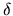
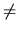
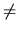

The network is built of n servers connected by bidirectional wires. Two servers can be directly connected by at most one wire. Each server can be directly connected to at most 10 other servers and every two servers are connected by some path in the network. Each wire has a fixed positive data transmission time measured in milliseconds. The distance (in milliseconds) (V, W) between two servers V and W is defined as the length of the shortest (according to transmission time) path connecting V and W in the network. For convenience we let (V, V) = 0 for all V.
Some servers offer more services than others. Therefore each server V is marked with a natural number r(V), called a rank. The bigger the rank the more powerful a server is.
At each server, data about nearby servers should be stored. However, not all servers are interesting.
The data about distant servers with low ranks do not have to be stored. More specifically, a server W is
interesting for a server V if for every server U such that
(V, U) (V, W) we have
r(U)
(V, W) we have
r(U) r(W).
r(W).
For example, all servers of the maximal rank are interesting for all servers. If a server V has the maximal rank, then exactly the servers of the maximal rank are interesting for V. Let B(V) denote the set of servers interesting for a server V.
We want to compute the total amount of data about servers that need to be stored in the network being the total sum of sizes of all sets B(V). The Kingdom of Byteland wanted the data to be quite small so it built the network in such a way that this sum does not exceed 30n.
Write a program that:
The ranks of the servers are given in the next n lines. Line i contains one integer r(i) (
1 r(i)
r(i) 10) - the rank of the i-th server.
10) - the rank of the i-th server.
The wires are described in the next m lines. Each wire is described by three numbers a, b, t (
1 t
t 1000,
1
1000,
1 a, b
a, b n, ab), where a and b are numbers of the servers connected by the wire and t is the
transmission time of the wire in milliseconds.
n, ab), where a and b are numbers of the servers connected by the wire and t is the
transmission time of the wire in milliseconds.
1 4 3 2 3 1 1 1 4 30 2 3 20 3 4 20
9
Note: Because
B(1) = {1, 2},
B(2) = {2},
B(3) = {2, 3},
B(4) = {1, 2, 3, 4}.